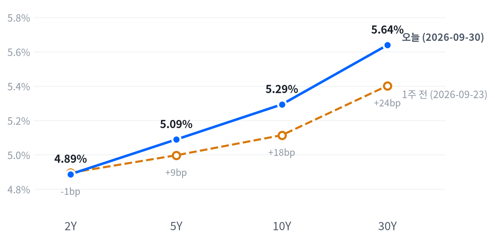

수요일 뉴욕 증시는 나스닥만 오르고 S&P500과 다우는 내린 채 3분기를 마쳤다. 8월 근원 PCE가 예상을 밑돌아 오전에 올랐던 지수는 30년물 금리가 2002년 이후 최고권으로 올라서자 마지막 한 시간에 상승분을 모두 내줬다(CNBC).
시장은 인상을 거두지 않고 10월에서 12월로 미뤘을 뿐이라 2년물이 움직이지 않았다고 판단한다. 이 판단은 10월 2일 고용보고서에 2년물이 반응하는지로 확인한다.
이날을 정한 것은 물가 지표 자체보다 그 뒤 국채 커브의 반응이었다. 08:30(ET) 8월 근원 PCE가 전년비 3.0%로 다우존스 예상(3.3%)을 밑돌자 주식은 오전 내내 올랐다. 2년물 금리는 종가 기준으로 거의 움직이지 않았다. 30년물은 CNBC가 2002년 이후 최고권이라고 전한 자리까지 올랐고, 주가지수는 마지막 한 시간에 오전 상승분을 모두 내줬다.
시장은 인상을 거둔 것이 아니라 10월에서 12월로 미뤘다고 판단한다. CME FedWatch를 인용한 보도에서 10월 인상 확률은 절반 아래로 내려갔지만, 12월까지 한 번 이상 오를 확률은 90%로 남았다. 연말까지의 경로가 그대로면 2년물이 움직일 이유가 적다. 서프라이즈의 질도 약했다. BEA가 측정 방법을 바꾸며 7월 근원치를 낮춰 잡았기 때문에 예상과의 차이는 대부분 새 기준선에서 나왔고, 전월비로 보면 차이는 0.1%포인트뿐이다. 같은 시각 2분기 GDP가 상향된 것도 금리를 받쳤다. 장기물 상승이 기간프리미엄인지 성장 재평가인지는 9월 30일 실질금리가 갱신돼야 갈린다.
새 투자 아이디어는 내지 않고 관찰로 둔다. 2년물 방향에 걸려면 발표 전 연말 경로의 가격이 있어야 하는데 그 기준선이 없어, PCE 약세가 이미 가격에 들어갔는지 판단할 수 없다. 논리상 가장 가까운 표현은 5년물 대비 30년물 스티프너다. 그러나 2s10s가 한 주 새 18.7bp 벌어져 움직임의 상당 부분이 이미 지나갔고, 캐리와 선물 베이시스를 잴 자료도 없다. 판단 시계는 10월 2일 08:30(ET) 9월 고용보고서까지다. 주식은 지수가 고점권에 있지만 평균 종목이 지수보다 약했고 오후 금리 상승에 밀려 저점권에서 끝났다. 금리가 다시 오르는 날 이 막판 되돌림이 반복되는지를 먼저 본다.
10월 2일 고용이 컨센서스(+8.4만 명)에서 크게 벗어났는데도 2년물이 또 제자리이거나 반대로 움직이면, 연말 경로가 2년물을 정한다는 판단은 틀린 것이다. 2년물과 30년물이 함께 내려 5s30s가 53.1bp 아래로 좁혀지면 장기물이 기간프리미엄으로 움직인다는 해석도 거둔다. 고용이 컨센서스 부근에서 나오면 어느 쪽도 가려지지 않으므로 판단을 10월 9일까지 미룬다.
| 지수 | 종가 | 등락률 | 기준일 |
|---|---|---|---|
| 닛케이225 | 65,481.27 | -0.60% | 9월 29일 |
| 항셍 | 24,523.57 | -0.48% | 9월 29일 |
| 상해종합 | 3,830.45 | +0.18% | 9월 29일 |
| DAX | 25,399.21 | +0.10% | 9월 29일 |
| FTSE100 | 10,636.70 | -0.45% | 9월 29일 |
| 유로스톡스50 | 6,320.26 | +0.30% | 9월 29일 |
| VIX | 16.34 | +1.87% | 9월 30일 |
아시아·유럽 지수는 확보된 가장 최근 마감인 9월 29일 기준이다. VIX는 9월 30일 마감 기준이다.
미국은 아시아의 약세를 이어받았다. 가장 최근 마감인 9월 29일 아시아 세 지수는 평균으로 소폭 내렸고, 지역 안에서도 갈렸다(닛케이 -0.60%, 상해종합 +0.18%). 유럽은 평균으로 보합이었지만 역시 지역 안에서 갈렸다(FTSE100 -0.45%, 유로스톡스50 +0.30%). VIX는 16.34로 조금 올랐을 뿐 여느 수준에 머물러, 막판 매도에도 변동성 시장은 크게 흔들리지 않았다.
야간 선물은 오름세였다. S&P 선물(ES)은 07:00(ET) 7,720에서 08:30 7,771까지 올랐고, 나스닥100 선물(NQ)도 같은 시각에 저점과 고점을 찍으며 0.88% 폭으로 움직였다. 선물 고점은 PCE와 GDP가 함께 나온 08:30과 겹친다. 현물은 S&P +0.24%, 나스닥 +0.39%, 러셀2000 +0.28% 갭으로 올라 출발했다.
평균 종목은 지수를 따라가지 못했다. 동일가중 S&P이 시가총액가중 지수보다 0.5%포인트 더 내려, 대형 기술주 몇 개가 지수를 받치는 동안 나머지 종목은 고르게 내림세였다. 세 지수 모두 하루 범위의 바닥 근처인 저점권에서 끝나, 장 막판 매도가 종가까지 이어졌다.
고점권·저점권 경계는 최근 2,256거래일의 일간 종가 위치 이력으로 다시 잰 기준이다.
이날은 물가 지표가 오전을, 장기 금리가 오후를 움직였다. PCE 발표 뒤 S&P은 10:30(ET) 7,723까지 올랐고, Yahoo Finance도 미드데이 기사에서 약한 물가 지표 덕에 시장이 올랐다고 정리했다. 오후 들어 30년물 금리가 최고 수준에 닿자 지수는 밀리기 시작했다. CNBC는 S&P과 다우가 마지막 한 시간에 장 초반 상승분을 지웠다고 전하며, GDP 상향과 ADP 9월 민간고용(+9만 명, 예상 6.8만 명)을 금리 상방 요인으로 들었다. 9월 30일은 3분기 마지막 거래일이라 분기말 리밸런싱이 막판 매도에 섞였을 가능성도 있지만 이를 확인한 자료는 없다. 장 마감 뒤에는 마이크론이 컨센서스를 웃도는 실적을 냈고, 시간외 반응은 보도마다 방향이 엇갈렸다. 알파벳은 Gemini 4 Argon 공개 뒤 시간외에서 1.7% 올랐다고 GuruFocus가 전했다.
주식과 금리는 최근 60거래일 동안 느슨하게 반대로 움직여 왔다(상관계수 -0.432, 직전 60거래일 -0.565).
| 지수 | 종가 | 등락률 |
|---|---|---|
| 나스닥 | 26,861.06 | +0.24% |
| S&P500 성장주 | 142.26 | -0.06% |
| S&P500 | 7,651.54 | -0.25% |
| 러셀2000 | 2,796.86 | -0.39% |
| S&P500 가치주 | 228.28 | -0.46% |
| 다우존스 | 50,906.05 | -0.86% |
| 섹터 | 등락률 |
|---|---|
| 기술 | +0.64% |
| 에너지 | -0.06% |
| 경기소비재 | -0.28% |
| 커뮤니케이션서비스 | -0.45% |
| 유틸리티 | -0.68% |
| 소재 | -0.81% |
| 부동산 | -1.04% |
| 금융 | -1.13% |
| 산업재 | -1.27% |
| 헬스케어 | -1.35% |
| 필수소비재 | -1.53% |
S&P500은 7,652로 사흘째 내렸지만 최근 2년(504거래일) 가운데 이보다 높았던 날이 31일뿐인 자리에 있고, 나스닥은 26,861로 올라 이보다 높았던 날이 아흐레뿐이다. 오늘 움직임은 세 지수 모두 여느 날 하루 폭의 절반에도 못 미쳐 미미했다. 분기를 닫는 한 달로 보면 지수의 높이는 기술 한 업종이 받쳤다. 기술 섹터가 한 달 5.08% 오르는 동안 금융(-7.14%)과 소재(-7.15%)는 크게 밀렸고, TheStreet에 따르면 9월 한 달 S&P500은 0.4% 내리고 나스닥은 1.9% 올랐다.
S&P은 7,700선 위에서 출발해 PCE 반등이 정점에 이른 10:30(ET)까지 올랐다가, 30년물 금리가 오른 오후 내내 밀려 하루 저점에서 끝났다. 나스닥은 오전 상승 폭이 가장 컸지만(시가 대비 +0.77%) 역시 저점에서 마감해 상승을 겨우 지켰다. 러셀2000은 시가보다 0.66% 밀려 가장 약했다. 엔비디아도 오전에 232달러를 넘었다가 오후에 시가 아래로 내려와 0.51% 오르는 데 그쳤다.
지수 하락은 기술 한 업종이 막아 섰다. S&P 하락 가운데 기술 섹터가 +0.22%포인트를 보탰고, 헬스케어(-0.13%포인트)와 금융(-0.13%포인트)이 가장 크게 깎았으며 산업재(-0.07%포인트)가 뒤를 이었다. 설명되지 않는 부분은 +0.04%포인트로 작아, 오늘 지수는 섹터 움직임으로 거의 다 설명된다.
섹터 기여는 최근 252거래일 회귀로 추정했고 설명력은 0.976이다. 소재·부동산은 추정에서 식별되지 않아 뺐다.
하락은 가치주와 방어 업종 쪽에 몰렸다. 가치주(-0.46%)가 성장주(-0.06%)보다 약했고, 필수소비재·헬스케어·산업재가 가장 많이 내렸다. 금리에 민감한 금융과 부동산도 1% 넘게 밀렸다. 지수는 고점권에 있지만 이날 버틴 종목은 기술 대형주에 몰렸고, 평균 종목은 지수를 따라가지 못했다. 이 모양이 이어지면 지수의 고점권은 좁은 종목군이 떠받치는 셈이라, 장기 금리가 한 번 더 오르는 날 지수가 오늘처럼 쉽게 밀릴 수 있다고 본다.
| 만기 | 종가 | 전일比(bp) | 1주 전 | 주간 변화(bp) |
|---|---|---|---|---|
| 2Y | 4.887% | -0.2 | 4.895% | -0.8 |
| 5Y | 5.089% | +2.6 | 4.997% | +9.2 |
| 10Y | 5.293% | +3.8 | 5.114% | +17.9 |
| 30Y | 5.639% | +4.5 | 5.402% | +23.7 |
네이버 국채 종가 기준(2026-09-30, 전 만기 동일 기준일). 1주 전은 9월 23일.

1주 전(9월 23일)보다 2년물은 조금 내렸고 30년물은 크게 올라, 장기물이 끌어올린 베어 스티프닝이다.
10년물(5.293%)과 30년물(5.639%)은 최근 504거래일을 통틀어 가장 높은 자리에서 끝났고, CNBC는 30년물이 2002년 이후 최고권이라고 전했다. 30년물의 오늘 상승은 평소 하루 움직임을 조금 넘는 크기였고 10년물은 여느 날과 비슷했다. 이 자리까지 오는 데 한 주면 충분했다. 9월 23일보다 10년물은 17.9bp, 30년물은 23.7bp 올랐다.
하루로도 커브는 가팔라졌다. 2년물이 거의 제자리인 동안 5년물 2.6bp, 10년물 3.8bp, 30년물 4.5bp가 올라 만기가 길수록 더 올랐다. 2s10s는 40.6bp로 전 거래일(36.6bp)보다 4.0bp 벌어졌다. 5년물과 30년물의 금리차도 55.0bp로 1.9bp 넓어졌다. 한 주로 넓히면 2s10s는 21.9bp에서 18.7bp 벌어져, 단기 정책 기대는 그대로인데 장기 쪽만 오르는 베어 스티프닝이 이어진다.
2년물이 약한 PCE에 반응하지 않은 것은 정책 기대가 시점만 바뀌었기 때문이라고 본다. CNBC는 PCE 직후 내렸던 금리가 금요일 고용보고서를 앞두고 되올랐다고 전했다. 장기물 쪽 상승 재료로 같은 매체는 GDP 상향과 ADP 호조를 들었다. 장중 금리 경로가 없어 발표 직후 반응의 크기는 잴 수 없다.
같은 날짜로 맞춘 가장 최근 분해(9월 29일 기준)에서 10년물 명목금리 하루 상승 2bp는 실질금리 1bp와 기대인플레 1bp가 나눠 가졌다. 한 주 상승분은 거의 전부(28bp)가 실질금리 몫이었다. 9월 30일 10년 기대인플레는 2.36%로 1bp 오르는 데 그쳐, 오늘 장기물 상승도 물가 보상보다는 실질 쪽에서 나왔을 가능성이 크다. 그것이 성장 기대인지 기간프리미엄인지는 9월 30일 실질금리가 갱신돼야 갈린다. 10년 기간프리미엄은 9월 25일 기준 1.02%포인트로 오늘을 설명할 만큼 새 값이 아니다.
신용시장은 한 주 내내 넓어졌다. 하이일드 스프레드는 9월 29일 기준 3.08%포인트로 하루 6bp, 한 주 40bp 벌어졌고 투자등급도 0.84%포인트로 소폭 넓어졌다. 9월 30일 17주물 입찰은 응찰배율 2.89배, 간접 낙찰 54.1%로 무난했다. 이번 주 남은 입찰은 10월 1일 단기물 두 건뿐이라, 장기물 수급을 가늠할 이표채 입찰 결과는 당분간 없다.
5년 뒤 5년 명목금리는 9월 29일 기준 5.46%로 하루 4bp 올랐고, 실질 기준으로는 3.1%다. 기대인플레 지표와의 교차검증은 이번에 할 수 없었다. 위험 프리미엄이 섞인 값이라, 시장이 먼 구간 금리를 이 수준에서 거래한다는 정도로 읽는다.
| 통화쌍 | 종가 | 등락률 |
|---|---|---|
| DXY | 101.46 | +0.09% |
| USD/KRW | 1,350.50 | -0.67% |
| USD/JPY | 157.40 | +0.03% |
| EUR/USD | 1.1341 | -0.28% |
원/달러는 1,351원으로 0.67% 내려 같은 504거래일 가운데 이보다 낮았던 날이 열흘뿐인 원화 강세 자리로 들어섰다. 하루 낙폭은 여느 날 움직임과 비슷한 보통 크기였다. 달러지수와 엔/달러는 같은 기간의 한가운데쯤에 머물렀고, 오늘은 둘 다 거의 움직이지 않았다.
달러 전체로는 방향이 없었다. 2년물 금리가 제자리라 단기 금리차가 움직이지 않았고, 주식이 소폭 내린 정도로는 위험회피 수요도 크지 않았다. 달러지수의 소폭 상승은 유로 약세와 방향이 같다. 원화 강세는 개별 재료로 본다. 뉴스핌은 서울 외환시장 주간 종가가 1,353원으로 4원 가까이 내렸고 수출업체의 달러 매도가 나왔다고 보도했다. 분기 마지막 날 수출업체 매도가 원화를 끌어올렸을 수 있지만 그 규모는 확인되지 않는다.
엔/달러는 새벽 156.37엔까지 밀렸다가 미국 장중 157엔대로 돌아와 시가 부근에서 끝났다. PCE 발표 뒤에도 엔이 크게 움직이지 않아, 미국 단기 금리가 제자리였던 흐름과 맞는다.
주식과 달러의 최근 60거래일 상관계수 -0.327(직전 60거래일 -0.532).
| 품목 | 종가 | 등락률 |
|---|---|---|
| WTI | $90.08 | +0.78% |
| Brent(12월물) | $97.67 | 월물 교체로 비교 불가 |
| 천연가스 | $3.007 | -0.13% |
| 금 | $4,184.20 | +0.11% |
브렌트 종가는 근월물이 11월물에서 12월물로 바뀐 뒤의 가격이다. CNBC 시세 기준 ICE 브렌트 11월물은 9월 30일 만기였고, 전 거래일 11월물 정산가는 102.59달러였다. 두 계약의 가격 차가 섞여 하루 등락률로 싣지 않는다.
WTI는 90.08달러로 0.78% 올라 주식·채권과 같은 기간으로 재면 높은 쪽 16% 안에 머문다. 종가 기준 움직임은 평소 하루 폭의 4분의 1 정도로 미미했다. 장중 폭은 더 컸다. 새벽 88.59달러 저점에서 오전 11:00(ET) 91.96달러까지 올랐다가 오후에 오름폭을 대부분 내줬다.
공급 쪽 재료는 엇갈렸다. CNBC는 호르무즈를 거치는 원유 수출이 전쟁 전 수준인 하루 1,350만 배럴로 회복했다고 전하면서, 정제유 수출은 하루 67.7만 배럴로 전쟁 전(360만 배럴)에 한참 못 미친다고 덧붙였다. 원유 공급이 회복됐다는 소식에도 WTI가 소폭 오른 날이라, 오늘 유가를 정한 재료는 확인되지 않았다.
브렌트는 표의 숫자로 오늘 등락을 읽을 수 없다. 연속 시리즈가 11월물에서 12월물로 넘어가며 종가가 한 계약 아래로 내려앉았고, 같은 월물 기준 하루 등락은 확인하지 못했다. WTI와 브렌트의 스프레드도 월물이 어긋나 오늘은 같은 기준으로 비교하지 않는다. 천연가스는 거의 움직이지 않았다.
금은 4,184달러로 0.11% 올라 같은 기간의 한가운데쯤에 있다. 하루 궤적은 금리와 맞물렸다. PCE가 나온 08:30(ET)에 4,251달러 고점을 찍었다가, 장기 금리가 오른 오후에 4,178달러 저점까지 밀렸다. 금과 금리는 최근 60거래일 동안 느슨하게 반대로 움직여 왔고, 오늘 궤적도 그 관계 안에 있다.
금과 금리의 최근 60거래일 상관계수 -0.327(직전 60거래일 -0.305).
미국 경기 국면을 골디락스로 한 칸 옮긴다. 9월 1일부터 22영업일 이어 온 연착륙에서 성장 좌표만 둔화에서 보합으로 올리고, 물가는 둔화에 그대로 둔다. 2분기 GDP 3차 추정이 2차보다 0.7%포인트 올라가고 8월 실질 개인소비도 크게 늘어, 전날 판단을 미루며 기다린 소비 확인이 성장 쪽으로 나왔기 때문이다.
성장 점수(-0.112)는 둔화 경계 안쪽에서 보합을 가리켜 왔고, 오늘 새 발표가 그 방향을 확인했다. 물가 점수(-0.869)는 여덟 지표 가운데 다시 가속하는 것이 하나도 없어 둔화가 더 뚜렷해졌다. 국면 이름과 달리 장기 금리는 2년 최고권에 있어, 이 국면이 자산 가격에 순하게 전달되지는 않는다. 10월 2일 고용상황이 올린 성장 좌표를 다시 시험한다.
고용은 개선 쪽이지만 힘은 미미하다(7개 중 4개). 계속 실업수당 청구가 4주 평균으로 뚜렷하게 줄었고, 실업률은 4.1%로 석 달 평균이 완만하게 내려왔다. 비농업 고용은 8월에 늘었지만 석 달 평균은 완만한 악화라 반대편에 선다. 점수 밖의 ADP 9월 민간고용은 예상을 웃돌았다(CNBC). 고용축 +0.27
| 지표 | Actual | Forecast | Previous | 발표일 | 컨센 대비 | 직전 대비 | 추세 |
|---|---|---|---|---|---|---|---|
| 구인건수(8월) | 7,079K | 7,225K | 7,335K | 2026-09-29 | 하회▼ | 악화 | 악화(미미) · 3개월 평균 7,336K → 7,199K |
| 신규 실업수당 청구 | 197,000 | — | 198,000 | 9월 19일 주간 | 개선 | 개선(미미) · 4주 평균 206K → 202K | |
| 신규 청구 4주 평균 | 202,250 | — | 204,000 | 9월 19일 주간 | 개선 | 악화(미미) · 4주 평균 202K → 205K | |
| 계속 실업수당 청구 | 1,719,000 | — | 1,717,000 | 9월 12일 주간 | 악화 | 개선(뚜렷) · 4주 평균 1,787K → 1,744K | |
| 비농업 고용 변화(8월) | +162K | — | +21K | 2026-08 기준월 | 개선 | 악화(완만) · 3개월 평균 +142K → +71K | |
| 실업률(8월) | 4.1% | — | 4.1% | 2026-08 기준월 | 보합 | 개선(완만) · 3개월 평균 4.30% → 4.13% | |
| 평균시간당임금 MoM(8월) | +0.27% | — | +0.16% | 2026-08 기준월 | 개선 | 개선(완만) · 3개월 평균 +0.20% → +0.23% | |
| ADP 민간고용(9월) | +90K | +68K | — | 2026-09-30 | 상회▲ | — | — |
생산·활동은 보합이다(5개 중 1개 개선). 새로 나온 2분기 GDP 3차 추정은 2차보다 올라왔지만 1분기 성장률보다는 낮아 직전 대비로는 악화로 잡힌다. 내구재 주문은 8월 -0.02%로 석 달 평균이 완만하게 꺾였고, 신규주택 판매는 미미하게 개선, 기존주택 판매는 미미하게 악화다. 생산·활동축 -0.187
| 지표 | Actual | Forecast | Previous | 발표일 | 컨센 대비 | 직전 대비 | 추세 |
|---|---|---|---|---|---|---|---|
| 산업생산 MoM(8월) | +0.02% | — | +0.20% | 2026-08 기준월 | 악화 | 보합 · 3개월 평균 +0.24% → +0.14% | |
| 내구재주문 MoM(8월) | -0.02% | — | +0.86% | 2026-08 기준월 | 악화 | 악화(완만) · 3개월 평균 +1.95% → +0.47% | |
| 신규주택판매(8월) | 684K | — | 643K | 2026-08 기준월 | 개선 | 개선(미미) · 3개월 평균 645K → 666K | |
| 기존주택판매(8월) | 398만 | — | 406만 | 2026-08 기준월 | 악화 | 악화(미미) · 3개월 평균 4,080K → 4,057K | |
| 실질GDP QoQ 연율(2분기 3차) | +2.2% | 1.5% | +2.5% | 2026-09-30 | 상회▲ | 악화 | — |
BEA는 2분기 실질 GDP가 연율 2.2% 늘었다고 3차 추정에서 밝혔다. 2차 추정과 시장 예상은 모두 1.5%였고, 1분기도 2.5%로 상향 수정됐다. 이번 발표는 연간 개정과 함께 나왔다.
BEA는 소비 지출과 투자, 수출이 성장을 만들었고 GDP에서 빼는 수입은 늘었다고 서술했다. 보도된 기여도는 소비 2.51%포인트, 고정투자 1.35%포인트, 순수출 -1.1%포인트이고, 실질 최종판매는 2.8%로 2차(2.2%)보다 올라갔다. ING는 민간투자가 1.9%포인트 상향 수정됐다고 짚었다. 같은 분기 PCE 물가는 연율 5.0%로 0.3%포인트 낮아졌고, 근원도 같은 폭 내려왔다.
성장은 올려 잡고 물가는 낮춘 조합이다. 상향의 중심이 소비와 투자라 일회성 재고 요인으로 보기 어렵고, 오늘 성장 좌표를 보합으로 올린 직접 근거가 됐다. 정책 경로에는 인상의 급박함을 낮춘 PCE와 반대쪽으로 작용해, 인상을 거두지 않고 미루는 쪽에 무게를 실었다.
소비는 악화다(2개 중 1개 악화). 소매판매는 8월에 늘었지만 석 달 평균이 앞 석 달보다 뚜렷하게 낮고, 미시간대 소비자심리는 석 달 평균으로 미미하게 나아졌다. 물가를 뺀 8월 실질 개인소비가 0.55% 늘어 명목 소매판매의 반등이 가격만의 착시는 아니었다. 점수 밖의 컨퍼런스보드 9월 소비자신뢰는 예상을 크게 밑돌아 심리와 지출의 괴리가 남는다. 소비축 -0.419
| 지표 | Actual | Forecast | Previous | 발표일 | 컨센 대비 | 직전 대비 | 추세 |
|---|---|---|---|---|---|---|---|
| 소매판매 MoM(8월) | +1.13% | — | -0.46% | 2026-08 기준월 | 개선 | 악화(뚜렷) · 3개월 평균 +1.09% → +0.29% | |
| 미시간대 소비자심리(8월) | 51.7 | — | 55.2 | 2026-08 기준월 | 악화 | 개선(미미) · 3개월 평균 49.3 → 52.1 | |
| 컨퍼런스보드 소비자신뢰(9월) | 81.9 | 89.2 | — | 2026-09-29 | 하회▼ | — | — |
물가는 완만한 둔화다. 여덟 지표 가운데 다시 가속하는 것은 없고, 셋은 교착이다. 소비자물가 전월비와 생산자물가는 8월에 올랐지만 석 달 평균이 앞 석 달보다 뚜렷하게 낮아졌고, 근원 소비자물가 전월비도 완만하게 내려왔다. 새로 나온 8월 PCE 물가는 전년비로 조금 올랐지만 석 달 평균이 내려와 둔화 쪽에 섰다. 물가축 -0.869
| 지표 | Actual | Forecast | Previous | 발표일 | 컨센 대비 | 직전 대비 | 추세 |
|---|---|---|---|---|---|---|---|
| CPI YoY(8월) | 3.71% | — | 3.54% | 2026-08 기준월 | 상승 | 교착 · 3개월 평균 3.85% → 3.66% | |
| CPI MoM(8월) | +0.40% | — | +0.07% | 2026-08 기준월 | 상승 | 둔화(뚜렷) · 3개월 평균 +0.66% → +0.02% | |
| Core CPI YoY(8월) | 2.76% | — | 2.79% | 2026-08 기준월 | 하락 | 교착 · 3개월 평균 2.87% → 2.79% | |
| Core CPI MoM(8월) | +0.29% | — | +0.22% | 2026-08 기준월 | 상승 | 둔화(완만) · 3개월 평균 +0.26% → +0.16% | |
| PPI 최종수요 MoM(8월) | +0.40% | — | +0.07% | 2026-08 기준월 | 상승 | 둔화(뚜렷) · 3개월 평균 +0.79% → +0.12% | |
| PCE 물가 YoY(8월) | 3.42% | 3.7% | 3.36% | 2026-09-30 | 하회▼ | 상승 | 둔화(미미) · 3개월 평균 3.59% → 3.41% |
| Core PCE YoY(8월) | 3.01% | 3.3% | 2.98% | 2026-09-30 | 하회▼ | 상승 | 둔화(미미) · 3개월 평균 3.12% → 3.01% |
| 미시간대 1년 기대인플레(8월) | 4.0% | — | 4.2% | 2026-08 기준월 | 하락 | 교착 · 3개월 평균 4.43% → 4.27% |
BEA에 따르면 8월 PCE 물가는 전년비 3.42%, 근원은 3.01%로 다우존스 예상(3.7%, 3.3%)을 밑돌았다. 전월비로는 헤드라인 0.3%, 근원 0.2%(예상 0.3%)였다.
예상과의 차이는 대부분 수정된 기준선에서 나왔다. BEA는 법률 서비스·소프트웨어·포트폴리오 관리 수수료의 측정 방법을 2021년까지 소급해 바꿨고, 7월치가 헤드라인 3.7%에서 3.4%로, 근원 3.3%에서 3.0%로 낮아졌다. 이 변경이 7월 근원 수준을 0.36%포인트 끌어내렸다고 Trading Economics는 전했다. 지출 쪽은 강했다. 명목 개인소비는 0.9% 늘었고 증가분의 약 60%가 상품이었으며, 물가를 뺀 실질 개인소비는 0.55%(전월 0.05%), 내구재 명목 지출은 2.0% 늘었다. 개인소득은 0.2% 늘었고 저축률은 4.1%였다.
물가는 둔화 쪽 판단을 지지하지만 지속성의 근거로는 약하다고 본다. 근원 3개월 연율이 2% 안팎으로 내려온 것(CNBC·ING)은 6·7월 하향 수정 덕이 크고, 월러 이사가 방법론 효과에 의문을 보인 만큼 연준이 이 미스를 그대로 받아들일지는 불확실하다. 이 발표는 물가 둔화 판단을 유지시키고 인상 시점을 12월 쪽으로 미는 근거가 됐다.
직전 대비는 Actual을 Previous와 비교한 것이고, 추세는 최근 3개월 평균을 그 앞 3개월 평균과 비교한 것입니다(주간 실업수당 청구는 4주 평균끼리). 추세의 세기는 그 지표가 평소 움직이는 폭에 견준 크기이고, 작은 변화는 보합으로 봅니다. 분기 지표인 GDP는 두 비교가 같은 숫자를 보므로 직전 대비만 싣습니다.
연준의 다음 수는 연내 한 차례 추가 25bp 인상이라는 판단을 유지하고, 시점은 10월 28일보다 12월 9일 FOMC 쪽으로 옮긴다. 발표 뒤 CME FedWatch를 인용한 보도(KuCoin·PANews)에서 10월 인상 확률은 47.1%였고, 12월까지 누적으로는 +25bp 51.8%, +50bp 38.2%, 동결 10%였다. CNBC는 10월 확률이 발표 전 80%에서 37%로 내렸다고 전해, 매체와 시각에 따라 수준은 다르지만 방향은 같다.
인상 자체보다 시점이 밀렸다고 본다. ING는 근원 PCE의 둔화가 윌리엄스 총재의 「서두를 필요가 없다」는 발언을 뒷받침한다고 봤고, 카슈카리 총재는 같은 날 저녁 인플레가 여전히 너무 높다고 말했다(CNBC).
10월 2일 9월 고용이 컨센서스(+8.4만 명)를 크게 밑돌고 실업률이 4.2%를 넘으면 인상 우위 판단을 재검토한다. 고용이 예상을 크게 웃돌고 보도된 10월 인상 확률이 다시 과반으로 올라서면 시점을 10월 쪽으로 당긴다.
채권과 귀금속은 우호로 둔다. 물가 둔화가 실질금리 정점과 완화 재개 기대로 이어진다는 경로인데, 오늘 성장 좌표가 올라가 그 경로가 한 걸음 늦어졌다. 정책 기대의 완화는 단기물에서 멈췄고 장기물까지 내려오지 않았다. 근원 PCE 전년비가 3.0% 아래로 내려오거나 30년물이 5.05% 아래로 돌아와야 확인된다.
주식과 에너지는 중립이다. 성장이 보합으로 올라오며 이익 쪽 힘은 커졌지만, 최고권의 장기 금리가 밸류에이션을 누른다. 에너지는 공급 쪽 사건이 가격을 정해 수요 경로로 방향을 잡기 어렵다. ISM 제조업 PMI가 50을 웃돌며 재가속하거나 10년물이 4.5% 아래로 내려와야 주식 쪽 판단이 바뀐다.
달러는 비우호로 둔다. 물가 둔화가 이어지면 실질금리 차가 좁혀져 달러가 약해진다는 경로다. 성장 좌표가 올라가고 인상이 미뤄졌을 뿐 거둬지지 않아 미국 금리 수준이 이 경로를 계속 막는다. 달러지수가 20거래일 동안 3% 이상 더 내리거나 FedWatch에 인하 확률이 다시 나타나야 확인된다.
메모리는 우호, AI 인프라는 중립이다. 이 그룹은 매크로 국면과 따로 움직인다. 장 마감 뒤 마이크론이 FQ1 매출 가이던스로 약 615억 달러를 내놔 LSEG 예상(570억 달러)을 넘었고, 메모리 판단의 확인 조건인 가이던스 상향이 채워졌다. AI 인프라는 높은 장기금리가 캐펙스의 힘을 상쇄하는 구도가 그대로이고, 하이퍼스케일러의 3분기 설비투자 가이던스가 이를 가른다.
PCE와 GDP가 함께 나온 08:30(ET)에 S&P 선물과 금이 하루 고점을 찍어, 시장은 먼저 약한 근원 PCE에 반응했다. 그 뒤 방향은 금리가 정했다. CNBC는 발표 직후 내렸던 금리가 고용보고서를 앞두고 되올랐다고 전했고, 종가로는 2년물이 제자리, 30년물은 올랐다. 예상과의 차이가 대부분 7월치 수정에서 나왔고 성장 지표가 같은 시각 상향돼, 시장은 물가 미스를 인상 시점에만 반영했다고 판단한다.
애플(+1.10%)이 지수를 가장 크게 받쳤다. Counterpoint는 신형 iPhone Duo가 올해 600만 대 팔릴 수 있다고 추정했고, UBS는 iPhone 18 Pro 대기시간이 크게 변하지 않았다고 전했다(invezz).
알파벳(+1.01%)도 지수를 받친 쪽이었지만, 정규장 상승에 확인된 재료는 없다.
메타(-1.84%)는 지수를 끌어내린 쪽이었다. invezz는 OpenAI의 AI 에이전트 'Dots' 출시가 메타의 'Muse'와 경쟁할 수 있다는 우려와 9월 급등 뒤 차익실현을 이유로 들었다. CNBC에 따르면 메타의 9월 상승률 27%는 2022년 이후 가장 좋은 달이었다.
일라이 릴리(-2.33%)는 헬스케어 약세를 이끌었고, 확인된 재료는 없다. 같은 날 엘로랄린타이드와 티르제파타이드를 함께 쓴 2상 결과(체중 최대 23.3% 감소, 투약 중단률 10.8~27%)가 공개됐지만 공개 시각이 정규장 전인지 확인하지 못했다.
모더나(-5.35%)는 거래대금 상위 종목 가운데 가장 크게 내렸다. 씨티는 모더나 투자의견을 중립에서 매도로 낮추며, 200달러 주가를 정당화하려면 연 260억 달러의 항암 매출이 필요하다는 논리를 들었다(tradingpedia·invezz). 9월 28일 델라웨어 연방법원이 몬산토 특허 소송의 기각 신청을 받아들이지 않은 점도 함께 거론됐다.
오늘 새로 연 질문은 약한 PCE가 왜 2년물을 움직이지 못했는가다. 보도된 10월 인상 확률은 크게 내렸는데 2년물은 종가 기준 0.2bp 내리는 데 그쳤다. 우리는 시장이 인상을 거두지 않고 12월로 옮겨 연말까지의 누적 경로가 그대로였기 때문이라고 본다. 대안은 셋이다. 방법론 변경과 7월 수정이 만든 미스를 시장이 할인했을 수 있고, 같은 시각 GDP 상향과 ADP 호조가 상쇄했을 수 있으며, 분기말 수급일 수도 있다. 발표 전 연말 경로의 가격을 저장해 두지 못해 하루 종가로는 셋 다 배제하지 못한다. 10월 2일 고용보고서가 컨센서스와 뚜렷이 갈릴 때 2년물이 그 방향으로 오늘보다 크게 움직이고 보도된 12월 누적 인상 확률도 같은 쪽으로 가면 지지로 본다. 뚜렷한 서프라이즈에도 2년물이 다시 제자리면 약화로 보고, 고용이 컨센서스 부근이면 판정을 미룬다. 시한은 10월 2일 17:00 ET다.
9월 29일 발행본에서 연 질문은 장기물이 연준 경로·유가에서 떨어져 기간프리미엄으로 가격이 매겨지는가였다. 첫 시험일인 오늘 방향 조건은 채워졌다. 약한 PCE에 2년물은 제자리였고 30년물은 올랐으며, 5s30s는 53.1bp에서 55.0bp로 넓어져 약화 기준선 위에 남았다. 기대인플레도 1bp 오르는 데 그쳐 물가 보상 쪽 약화 조건은 발동하지 않았다. 메커니즘은 가리지 못한다. 같은 시각 GDP가 상향되고 ADP가 예상을 웃돌아, 장기물 상승은 성장 기대 상향으로도 설명된다. 9월 30일 실질금리와 기간프리미엄 추정치가 나와야 둘을 나눌 수 있다. 두 번째 시험은 10월 2일 고용보고서, 마감은 10월 9일 17:00 ET다.
9월 25일에 연 질문은 호르무즈 협상 뉴스가 FedWatch 10월 인상 확률, 2년물, 커브 스티프닝을 함께 움직이는가였다. 오늘은 판정할 수 없다. 에너지가 아니라 PCE가 정책 기대를 움직인 날이었다. 호르무즈 원유 수출이 전쟁 전 수준으로 돌아왔다는 보도에도 WTI는 올랐고, 인상 확률 하락의 원인은 PCE로 보도됐다. 브렌트는 월물 교체로 같은 월물 비교가 안 된다. 반증 조건은 발동하지 않았고 스티프닝 다리는 이어졌다. 마감은 10월 9일이다.
9월 22일에 연 질문은 FOMC 인상 뒤 메모리·AI 인프라가 금리 민감 업종과 따로 움직이는가였다. 오늘 방향은 약화 쪽이다. 10년물이 오른 날 AI 인프라 다섯 종목은 단순평균 1.09% 내려 S&P보다 약했고(버티브 -2.83%, 코히런트 -1.51%), 금융과 부동산도 함께 내렸다. 9월 23·24·28일에 이어 네 번째 동반 약세다. 메커니즘은 가리지 못한다. GE버노바에는 데이터센터가 더 빨리 설치되는 터빈을 택한다는 보도(GuruFocus)가 있었고, 버티브는 당일 재료를 찾지 못했으며 PCE·GDP·분기말이 같은 날 겹쳤다. 마감은 10월 28일 FOMC다.
9월 28일에 연 질문은 반도체·AI 하드웨어의 초과 하락이 AI 수요 우려인지 금리발 밸류에이션 압축인지다. 시험 창이 오늘 장 마감과 함께 열렸고, 지지 조건의 앞 절반은 채워졌다. CNBC에 따르면 마이크론 FQ4 매출은 542.3억 달러로 LSEG 예상(504.5억 달러)과 9월 29일에 적어 둔 FactSet 컨센서스(510.7억 달러)를 모두 넘었다. 나머지 절반은 10월 1일 정규장에서 장기 금리가 높은 수준에 머무는 동안 마이크론과 AI 인프라 바스켓이 S&P보다 강한지다. 시간외 반응은 보도가 엇갈려 근거로 쓰지 않는다. 시험 창은 10월 1일 16:00 ET에 닫힌다.
열린 질문 가운데 셋은 금리에 걸려 있고 10월 2일 고용보고서가 다음 시험이다. 그보다 하루 앞서 10월 1일 정규장이 마이크론 실적 반응으로 반도체 질문을 먼저 닫는다.
이 보고서의 시세는 Yahoo Finance와 네이버 국채 종가, 거시 지표는 FRED와 각 발표 기관(BLS·BEA·Census 등), 그 밖의 내용은 본문에 밝힌 출처에서 가져왔다. 이 보고서는 투자 자문이 아니며 특정 자산의 매수·매도를 권유하지 않는다. 투자 판단과 그 결과에 대한 책임은 전적으로 투자자 본인에게 있다.